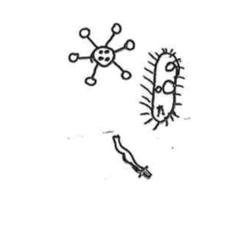
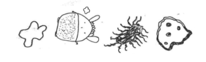
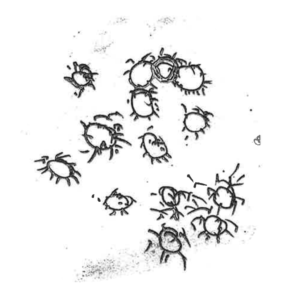

{#6} Convivere col guaio

«Sognai che l’universo visibile è persona fisica di Dio; che i vasti mondi che noi vediamo scintillare, milioni di miglia lontano nelle distese dello spazio, sono corpuscoli nel sangue delle sue vene; e che noi e le altre creature siamo i microbi che saturano i corpuscoli di vita innumerevole.»
Mark Twain, 3000 anni fra i microbi (Feltrinelli, 1996)
«Twain si lasciò ispirare dalle teorie scientifiche dell’epoca, la teoria delle malattie e la nuova teoria dei germi in particolare, la quale postulava che le malattie fossero causate da microbi, e si diffondessero attraverso il contatto con indivudui infetti. Questa scoperta, prontamente accettata dal pubblico, suggeriva quello che alcuni avevano già compreso, cioè che le frontiere che separano gli individui, e le nazioni, erano imprevedibilmente permeabili.»
R. L. Nichols, Infectious Imperialism: Mark Twain, Microbes and the Borders of the Citizen (traduzione nostra).

Cari germi,
vi starete chiedendo che diavolo ci è successo? Forse siete stati addirittura sollevati dal non ricevere più questa fastidiosa newsletter… Sorpresa: siamo ancora qui, e più virulenti che mai!
Un po’ come Treponema pallidum – uno degli “spiriti” che hanno infestato le storie che abbiamo recentemente letto e discusso – dopo i primi sintomi superficiali, a fine estate ci siamo latentizzati, insediandoci nel corpo di Festivaletteratura. Lì abbiamo sfruttato le risorse del nostro organismo ospite, arruolando le sue cellule, viaggiando attraverso le sue arterie, solleticando i suoi nodi linfatici. Questo lavoro sotterrano ha dato vita a Scienceground 1.5, uno spazio aperto e flessibile dedicato all’esplorazione di nuovi modi di coinvolgimento degli scienziati tra di loro e con il pubblico.
Ora siamo pronti a iniziare la terza fase dell’infezione: un attacco al vostro sistema neurale! Sotto troverete un sunto di alcune delle idee e contenuti che abbiamo sviluppato a Scienceground 1.5, e su come potete essere coinvolti nel processo.
E se non avete idea di cosa stiamo parlando, date un’occhiata al nostro blog e alle precedenti newsletter e sarete subito sul binario giusto!

Trasformazioni
Una delle nostre ospiti, la filosofa e divulgatrice scientifica Lynn Chiu, ha sintetizzato così, in tre tweet, la sua percezione di Scienceground:
Il coinvolgimento di diverse discipline e il coinvolgimento del pubblico dovrebbero essere – insieme ad insegnamento e ricerca – due dei pilastri del mondo accademico nella società attuale. Costituiscono forme distinte di crescita intellettuale e sviluppo della conoscenza.
Inoltre: tutti questi pilastri possono diventare esperienze trasformative quando succedono al di fuori dell’attuale struttura accademica basata esclusivamente sui meccanismi di ricompensa/incentivo.
In questo modo qui sto portando un argomento diverso da quello standard di dovere sociale e morale di divulgare “corretta” informazione scientifica ad un pubblico ignorante. In questo caso si tratta di diventare un migliore figura accademica/insegnante e co-creare conoscenza e riflessioni con esperti e professionisti diversi.
Ulteriori considerazioni di Lynn sulla sua partecipazione si possono trovare sul suo articolo per Medium A Philosopher of Biology at a Science Festival in a Literary Festival.

Cultura e Contaminazione
Lynn Chiu ci ha raccontato che l’immunologia si sta muovendo verso un modello conviviale del nostro rapporto coi microbi. O meglio, un modello in cui il conflitto c’è ed è riconosciuto, ma serve a determinare la propria identità. Mantenere un’infezione da herpes può aiutare ad “allenare” il proprio sistema immunitario ad affrontare future contaminazioni più dannose, ed il sistema immunitario è alla base del concetto di identità per tutti gli esseri viventi, come argomentato in The limits of the Self di Thomas Pradeu, filosofo nella biologia nonché mentore di Lynn.
In questo senso forse cultura e coltura (batterica) possono coincidere, ed infatti in inglese sono la stessa parola: culture. Crescere dei microrganismi che si trovano sulle nostre mani sui vetrini ci fa crescere perché mette in discussione la nostra identità. Nei laboratori di Scienceground abbiamo aiutato i bambini a incontrare i microbi per la prima volta (le foto si possono trovare qui): i disegni che ne hanno fatto prima di incontrarli adornano questa newsletter.

Resistenza Antibiotica
Il nostro ospite più sorprendente è forse stato Dame Sally Davies, che è stata per cinque anni Chief Medical Officer del Regno Unito (la figura di medico pubblico più importante). Dame Sally ha portato al festival la sua preoccupazione maggiore, a cui ha dedicato il suo mandato: l’insorgenza della resistenza microbica ai farmaci, problema discusso nel suo libricino urgente The Drugs Don’t Work (Penguin, 2013).
Nello stile di Scienceground, ci siamo avvicinati all’incontro leggendo il libro collettivamente e discutendolo pubblicamente. La multiresistenza può essere considerata una delle più urgenti sfide con cui si confrontal’umanità, al pari del cambiamento climatico. E proprio come il cambiamento climatico, non stiamo facendo abbastanza. Dopo molti anni come attivista globale a seguito della pubblicazione del suo libro, la Davies continua a essere dedita al tema, e agisce per farmarlo: è davvero scatenata. Un avvocato davvero infaticabile della sua causa: siamo stati fortunati a chiacchierare con lei per un paio di giorni, tra una visita a Palazzo Te e a Palazzo Ducale, prima di volare per la prossima destinazione del suo tour mondiale.
Puoi provare a intercettarla. sul suo account Twitter!

Sciamani e Spiriti
A Scienceground ha partecipato anche l’antropologo César Giraldo Herrera, che studia gli sciamani e i loro spiriti, e come la loro conoscenza si traduce nella microbiologia moderna.
Per un attimo abbiamo creduto che César fosse egli stesso uno sciamano-spirito. Al suo arrivo era atteso sulle scale di ingresso della stazione di Mantova. Quando non si è mostrato, lo abbiamo chiamato: «Dove sei?» «Sulle scale di fronte alla stazione.» «Allora devi essere uno spirito!». Era a Padova!
Finalmente lo abbiamo incontrato in carne e ossa al Festivaletteratura di Mantova per discutere del suo libro Microbes and Other Shamanic Beings, e abbiamo potuto constatare che davvero César incarna la cultura sciamanica.
Nel suo lavoro Giraldo-Herrera suggerisce che la moltitudine di creature che popolavano i mondi concettuali e percettivi dei nativi Amerindi, e che correlavano con gli eventi naturali e ad altre persone nell’ambiente, possono talvolta essere tradotti come ‘microbi’, piuttosto che ‘spiriti’ – la traduzione che i primi missionari Cristiani hanno affibiato dopo l’Incontro.
La tesi di Giraldo Herrera si fonda sull’analisi delle pratiche curative sciamaniche, dei miti che raccontavano, e di come i nativi concepivano il contagio e la malattia. Queste creature vivevano nelle fermentazioni e nelle decomposizioni, si trasmettevano di corpo in corpo, erano negli altri esseri viventi – anche inanimati. Inoltre, questi popoli avevano forme ancestrali ed efficaci di controllare la diffusione delle malattie e trattarle: infatti la moderna teoria occidentale del contagio prende abbondantemente a prestito dai concetti dei nativi.
Per chi volesse approfondire, abbiamo tradotto in italiano l’ultimo capitolo riassuntivo della tesi di César: Intessere Mondi.

Pesti e partecipazione
«Credo che l’amicizia nei confronti dei batteri che ci abitano sia il solo atteggiamento saggio. Qualcosa di più della convivenza civile. Intendo proprio un’amicizia. Come si faccia a costruirla e praticarla non so, e se abbia a che vedere con la scienza, epperò mi pare la sola dimensione. Diciamo: un tentativo di armonia. Che però può anche infrangersi. Come accade quando si scatenano le pesti.»
Bruno Giorgini, fisico e corrispondente di Radio Popolare Network, ci ha fatto visita a Scienceground 1.5. Come biglietto da visita ha portato una riflessione sull’amicizia tra uomini e microbi che, riecheggiando La peste di Camus, propone un interessante parallelo tra le colture batteriche e le città:
«Quando la peste sopraggiunge la città rattrappisce. Più precisamente dall’esterno viene circondata, messa in quarantena, talché chiunque cerchi di uscire ne viene con la forza impedito, e lo stesso accade a chi cerchi di entrarvi. Ovvero la città diventa un sistema chiuso sui due versanti. Si tratta di una condizione innaturale perché la città è per sua intima costituzione un sistema aperto. In questo senso la peste distrugge la città ancora prima di avere ucciso i suoi abitanti.»
Il resto dell’articolo su scienceground.it. Sul sito di Radio Popolare si possono invece trovare alcune considerazioni che Bruno ci ha regalato sull’assemblea aperta conclusiva di Scienceground, che si concludono con il bel consiglio:
«Può pensarsi e costituirsi scienceground oltrechè sugli assi della comunicazione, della educazione scientifica, della filosofia naturale in senso lato, della sperimentazione progettuale e linguistica, del dialogo e condivisione, anche attorno a un asse di ricerca scientifica che coinvolga le diverse discipline, tecniche, esperienza e competenza dei singoli/e, in una mixitè capace di produrre problemi scientifici di frontiera da iniettare nel corpo della ricerca militante? Detto in altro modo: può scienceground diventare il generatore di nuovi territori di ricerca scientifica?»
Ci piacerebbe moltissimo, e speriamo di essere all’altezza della sfida!

Scienceground è come l’Universo, in espansione. La comunità ExTemporanea che lo organizza è aperta e inclusiva. Abbiamo bisogno di persone che ci aiutino in praticamente tutto: dalle traduzioni a spostare sedie. Ma soprattutto che leggano e si documentino con noi, e che vengano a trovarci (dal vivo o online) per discutere di scienza e società.
ET